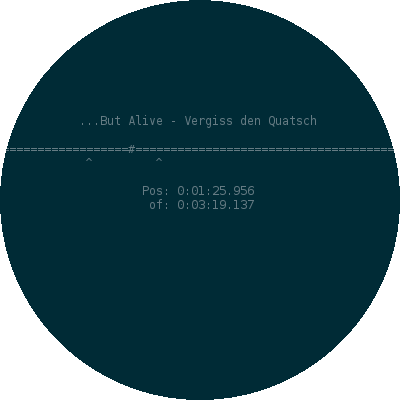
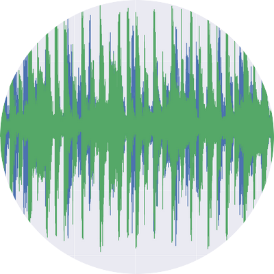

Research and Publications
My research interests touch especially the area of active learning in the field of robotics. So I try to apply machine learning techniques to the problem of autonomous robotics. This includes especially -- but is not limited to -- Bayesian techniques. In our curious robot project we experiment on autonomous exploration on our PR2 robot and use our active learning insights directly on real world problems. We are especially interested on degrees of freedom in the world and how robot could explore them and their structure to achieve task goals.
Earlier I was involved in the RoboCup Soccer team Fumanoids, where I wrote my master's thesis about humanoid gait generation.
I support the 'Erklärung der Initative für Hochschulen für den Frieden' (declaration of the initiative for universities for peace) against research for military purpose.
Publications
2015
- J. Kulick, R. Lieck, M. Toussaint: The Advantage of Cross-Entropy over Entropy in Iterative Information Gathering, arXiv e-pub: 1409.7552v2, 2015, pdf
- J. Kulick, S. Otte, M. Toussaint: Robots Solving Serial Means-Means-End Problems, In Proc. of Combining AI Reasoning and Cognitive Science with Robotics Workshop at Robotics: Science and Systems, 2015, pdf
- J. Kulick, S. Otte, M. Toussaint: Active Exploration of Joint Dependency Structures, In Proc. of the Int. Conf. on Robotics and Automation (ICRA), 2015, pdf, interactive poster
2014
- J. Kulick, R. Lieck, M. Toussaint: Active Learning of Hyperparameters: An Expected Cross Entropy Criterion for Active Model Selection, arXiv e-pub: 1409.7552v1, 2014, pdf
- S. Otte, J. Kulick, M. Toussaint, O. Brock: Entropy Based Strategies for Physical Exploration of the Environment's Degrees of Freedom, In Proc. of the Int. Conf. on Intelligent Robots and Systems (IROS), 2014, pdf
2013
- J. Kulick, M. Toussaint, T. Lang, M. Lopes: Active Learning for Teaching a Robot Grounded Relational Symbols, In Proc. of the Int. Joint Conf. of Artificial Intelligence (IJCAI), 2013, pdf
2012
- D. Seifert, S. Otte, J. Kulick, N. v. Schmude, L. Dohrmann, S. Heinrich, H. Moballegh, S. Mielke, L. Freitag, S. Hohberg, J. Auer, M. Losch, R. Rojas: Berlin United – FUmanoids Team Description Paper 2012, RoboCup 2012, pdf
2011
- J. Kulick: Ein stabiler Gang für humanoide, Fußball spielende Roboter, Masters thesis, Freie Universität Berlin, 2011, German, pdf
- D. Seifert, H. Moballegh, S. Heinrich, S. Oe, S. Mielke, N. von Schmude, T. Weißgerber, K. Würfel, R. Jonschkowski, J.Kulick, M. Fröhlich, J. Streckenbach, G. Lubitz, N. von Geyso, M. Schubert, Fu Yao, S. Puhlmann, O. Morillo, L. Freitag, R.Rojas: FUmanoids Team Description Paper 2011, RoboCup 2011, pdf
2009
Teaching and Open Thesis
Right now there are no open thesis topics I offer. But if you have an idea just write me an email. But note, that I reside in Berlin most of the time, so supervision is only possible via video calls or chat.
Courses I Taught
2012/13
Robotics2011/12
Softwareprojekt: A novel type of robot porogramming infrastructureProjects
During my research I programed a few algorithms and put them to libraries. In my spare time I also program on some smaller projects. You can find them here. For all the even smaller stuff check my GitHub account.
Mont Carlo Tree Search (MCTS) is a state of the art planning algorithm useful in many domains. I implemented various versions of it as a SciKit (basically a scientific python library).
Picture of Monte Carlo: Hampus Cullin, CC BY-SA 3.0

A simple, yet useful music player for musicians. It can set A-B-repeat very precisely. I'm also working on integrating some signal processing to time stretch songs. All this is for easily playing along your favorite music, even if your skills don't match the artists ones yet.
I forked scholar.py, a tool to use Google Scholar from the command line, and added some functionality (direct BibTex, EndNote... download etc.)

I moved the signal processing stuff of playalong to an own lib, because it a) might be useful for others and b) I have some other ideas for using it in other little projects. So far it only consists of a STFT and a phase vocoder.
Contact
I am a research assisstant and Ph.D candidate at the Machine Learning and Robotics Lab of University of Stuttgart. My supervisor is Marc Toussaint.
Berlin office:
c/o TU BerlinMarchstr. 23
Room 5.002
10587 Berlin
Tel.: +49 (0) 30 - 314 25395
Stuttgart Office:
Universitätsstr. 3870569 Stuttgart
Email:
johannes.kulick [at] ipvs.uni-stuttgart.deYou may consider contacting me encrypted. my gpg key.
Office Hours:
Normally you can just knock at my door (if it's not already open).